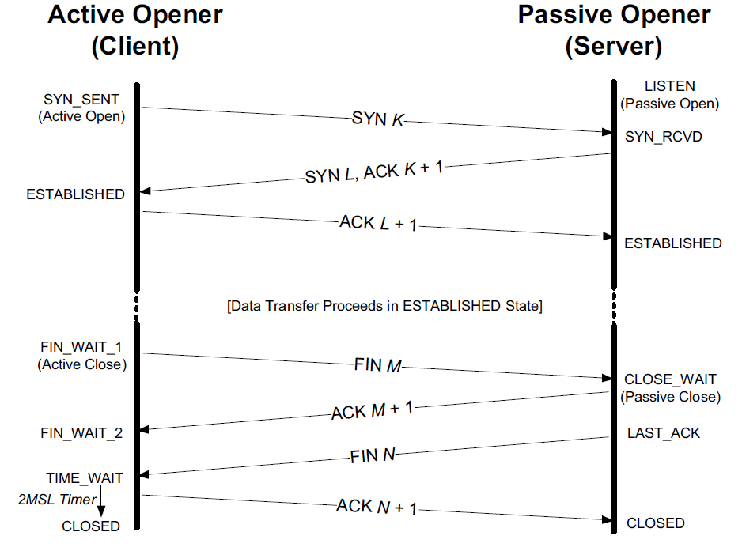
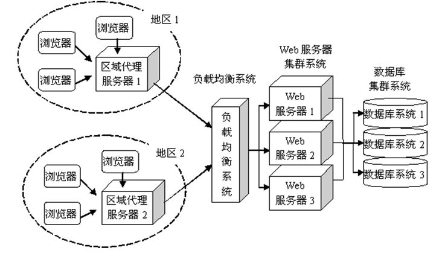
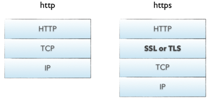

<!DOCTYPE html>
<html lang="zh-Hans-CN">
	<head>
		<meta charset="utf-8">
		<meta http-equiv="X-UA-Compatible" content="IE=edge,chrome=1">
		<meta name="viewport" content="width=device-width, initial-scale=1">
		
		<meta name="author" content="Simeon">
		<meta name="description" content="Simeon 个人微博">
		<meta name="generator" content="Hugo 0.52" />
		<title>从输入url到页面展示到底发生了什么 &middot; Simeon&#39;s blog</title>
		<link rel="shortcut icon" href="https://simeon49.github.io/blog/images/favicon.ico">
		<link rel="stylesheet" href="https://simeon49.github.io/blog/css/style.css">
		<link rel="stylesheet" href="https://simeon49.github.io/blog/css/highlight.css">

		
		<link rel="stylesheet" href="https://simeon49.github.io/blog/css/font-awesome.min.css">
		

		

		
	</head>

    <body>
       <nav class="main-nav">
	
	
		<a href='https://simeon49.github.io/blog/'> <span class="arrow">←</span>Home</a>
	
	<a href='https://simeon49.github.io/blog/posts'>Archive</a>
	<a href='https://simeon49.github.io/blog/tags'>Tags</a>
	<a href='https://simeon49.github.io/blog/categories'>Categories</a>
	<a href='https://simeon49.github.io/blog/about'>About</a>

	

	
</nav>


        <section id="wrapper" class="post">
            <article>
                <header>
                    <h1>
                        从输入url到页面展示到底发生了什么
                    </h1>
                    <h2 class="headline">
                    Jan 22, 2019 00:00
                    · 2839 words
                    · 6 minute read
                      <span class="tags">
                      
                      
                          
                              <a href="https://simeon49.github.io/blog/tags/web">web</a>
                          
                              <a href="https://simeon49.github.io/blog/tags/%E6%B5%8F%E8%A7%88%E5%99%A8">浏览器</a>
                          
                      
                      
                      </span>
                    </h2>
                </header>
                
                <section id="post-body">
                    

<p>看过几篇讨论这个问题的文章, 文章各自的作者从不同角度讨论这个问题, 都非常的好<br>
<a href="http://www.cnblogs.com/xianyulaodi/p/6547807.html">从前后端角度分析01</a>
<a href="https://blog.csdn.net/wdzxl198/article/details/11265475">从前后端角度分析02</a><br>
<a href="https://div.io/topic/457">从硬件角度分析(不做底层的了解一下就好)</a><br></p>

<p>下面是自己整理的, 算是一次对上面文章的读后回顾和补充</p>

<h3 id="1-缓存查询">1.缓存查询</h3>

<p>为了减少服务器的压力提高用户的体验效果,绝大多数网站会根据自己的需求使用对应的缓存策略(关于浏览器的缓存可以参考我的这篇<a href="https://simeon49.github.io/blog/posts/2019-01-16-浏览器缓存/">文章</a>), 如果浏览器命中缓存,则会根据缓存的类型进行下一步操作:<br></p>

<ol>
<li><p>强缓存:
直接使用缓存显示内容</p></li>

<li><p>协商缓存:
向服务器发送当前资源的协商请求,不同于普通请求,协商请求会包含一些用于标识资源特性的属性(过期时间/资源指纹&hellip;), 服务器根据这些属性判断客户端的资源是否需要更新, 如果需要更新资源则返回资源, 否则返回空给客户端</p></li>
</ol>

<h3 id="2-dns-domain-name-system-查询">2.DNS(Domain Name System)查询</h3>

<p>通常我们输入到url地址栏里的url是以域名的形式(比如:&ldquo;<a href="https://simeon49.github.io/blog/&quot;">https://simeon49.github.io/blog/&quot;</a>), 当然少数情况下会使用ip的形式(比如: <a href="http://192.168.0.1:8000/test.html">http://192.168.0.1:8000/test.html</a>) 如果url是域名的形式,则浏览器要进行DNS解析将域名转换成真实的IP地址.</p>

<h4 id="dns过程">dns过程</h4>

<ol>
<li>从浏览器的缓存中找DNS记录(不同的浏览器缓存的时间不同 大概的范围从几分钟到几十分钟)</li>
<li>从系统缓存中找(浏览器调用系统接口 比如: gethostbyname) 写入到系统host的DNS 会在这个过程中被使用</li>
<li>从域名服务器中找(更详细的过程 可以参考这篇<a href="http://www.ruanyifeng.com/blog/2016/06/dns.html">文章</a>)
&gt; 1. 从&rdquo;根域名服务器&rdquo;查到&rdquo;顶级域名服务器&rdquo;的NS记录和A记录
&gt; 2. 从&rdquo;顶级域名服务器&rdquo;查到&rdquo;次级域名服务器&rdquo;的NS记录和A记录
&gt; 3. 从&rdquo;次级域名服务器&rdquo;查出&rdquo;主机名&rdquo;的IP地址</li>
</ol>

<p>值得注意的是: 第3步的域名查询返回的IP可能会根据客户端所在的区域或者查询时间段的不同返回不同的ip 甚至可能是多个IP, 这其实是一种负载均衡的方法, 让更多主机参与客户端的请求服务.</p>

<p>引用这篇<a href="http://www.cnblogs.com/xianyulaodi/p/6547807.html">文章</a>的一个链接图

</p>

<h3 id="3-建立tcp链接">3.建立TCP链接</h3>

<p>有了服务器IP后, 客户端会向随机使用一个(1025-65535)的一个端口向服务器发起TCP链接请求</p>

<p>引用这篇<a href="https://www.sczyh30.com/posts/Network/tcp-connection/">TCP链接文章</a>的一个链接图</p>

<p></p>

<p><strong>扩充</strong>
&gt; 一些大一点的网站会将你的请求到反向代理服务器中，因为当网站访问量非常大，网站越来越慢，一台服务器已经不够用了。于是将同一个应用部署在多台服务器上，将大量用户的请求分配给多台机器处理。此时，客户端不是直接通过HTTP协议访问某网站应用服务器，而是先请求到Nginx，Nginx再请求应用服务器，然后将结果返回给客户端，这里Nginx的作用是反向代理服务器。同时也带来了一个好处，其中一台服务器万一挂了，只要还有其他服务器正常运行，就不会影响用户使用。
&gt; 
&gt; 通过Nginx的反向代理，我们到达了web服务器，服务端脚本处理我们的请求，访问我们的数据库，获取需要获取的内容等等，当然，这个过程涉及很多后端脚本的复杂操作。由于对这一块不熟，所以这一块只能介绍这么多了。</p>

<h3 id="4-建立http-https链接">4.建立HTTP/HTTPS链接</h3>

<p>HTTP(HyperText Transfer Protocol，超文本传输协议) 是客户端浏览器或其他程序与Web服务器之间的应用层通信协议. 传输的内容是明文的, 通常客户端与服务器直接的通信需要经过很多第三方的服务器, 这些服务器有的是可以信任的有的则不是, 明文传输在真实的网络环境中是不能保证其内容的私密性. 于是有了HTTPS(HyperText Transfer Protocol over Secure Socket Laye) 可以理解为HTTP + SSL/TLS, SSL/TLS是一种加密协议用于保证HTTP内容的私密性.</p>

<p></p>

<p>可以看到HTTPS 只是比HTTP多了一个SSL/TLS协议的操作(关于SSL/TLS的部分可参考这篇<a href="http://www.ruanyifeng.com/blog/2014/09/illustration-ssl.html">文章</a>)</p>

<h4 id="http请求-响应">http请求/响应</h4>

<p>客户端向服务器发送资源的http请求, 服务端响应请求将资源返回给客户端
(这里就不多展开, 有兴趣可以自己google搜索)</p>

<h3 id="5-浏览器渲染页面">5.浏览器渲染页面</h3>

<p>引用这篇<a href="https://segmentfault.com/a/1190000006879700">文章</a>的部分内容</p>

<p></p>

<p>浏览器是一个边解析边渲染的过程。首先浏览器解析HTML文件构建DOM树，然后解析CSS文件构建渲染树，等到渲染树构建完成后，浏览器开始布局渲染树并将其绘制到屏幕上。这个过程比较复杂，涉及到两个概念: reflow(回流)和repain(重绘)。DOM节点中的各个元素都是以盒模型的形式存在，这些都需要浏览器去计算其位置和大小等，这个过程称为relow;当盒模型的位置,大小以及其他属性，如颜色,字体,等确定下来之后，浏览器便开始绘制内容，这个过程称为repain。页面在首次加载时必然会经历reflow和repain。reflow和repain过程是非常消耗性能的，尤其是在移动设备上，它会破坏用户体验，有时会造成页面卡顿。所以我们应该尽可能少的减少reflow和repain。</p>

<p></p>

<p>JS的解析是由浏览器中的JS解析引擎完成的。JS是单线程运行，也就是说，在同一个时间内只能做一件事，所有的任务都需要排队，前一个任务结束，后一个任务才能开始。但是又存在某些任务比较耗时，如IO读写等，所以需要一种机制可以先执行排在后面的任务，这就是：同步任务(synchronous)和异步任务(asynchronous)。JS的执行机制就可以看做是一个主线程加上一个任务队列(task queue)。同步任务就是放在主线程上执行的任务，异步任务是放在任务队列中的任务。所有的同步任务在主线程上执行，形成一个执行栈;异步任务有了运行结果就会在任务队列中放置一个事件；脚本运行时先依次运行执行栈，然后会从任务队列里提取事件，运行任务队列中的任务，这个过程是不断重复的，所以又叫做事件循环(Event loop)。</p>

<p>浏览器在解析过程中，如果遇到请求外部资源时，如图像,iconfont,JS等。浏览器将重复1-6过程下载该资源。请求过程是异步的，并不会影响HTML文档进行加载，但是当文档加载过程中遇到JS文件，HTML文档会挂起渲染过程，不仅要等到文档中JS文件加载完毕还要等待解析执行完毕，才会继续HTML的渲染过程。原因是因为JS有可能修改DOM结构，这就意味着JS执行完成前，后续所有资源的下载是没有必要的，这就是JS阻塞后续资源下载的根本原因。CSS文件的加载不影响JS文件的加载，但是却影响JS文件的执行。JS代码执行前浏览器必须保证CSS文件已经下载并加载完毕。</p>

<h3 id="写在最后-web优化">写在最后 web优化</h3>

<p><strong>web优化: 就是让客户端以最快的速度显示出我们希望它显示的内容</strong></p>

<h5 id="优化原则">优化原则:</h5>

<ol>
<li>能不从网络中加载的资源就不从网络中加载，当我们合理使用缓存，将资源放在浏览器端，这是最快的方式</li>
<li>如果资源必须从网络中加载，则要考虑缩短连接时间，即DNS优化部分;减少响应内容大小，即对内容进行压缩</li>
<li>当资源到达浏览器之后，浏览器开始进行解析渲染，浏览器中最耗时的部分就是reflow，所以围绕这一部分就是考虑如何减少reflow的次数。</li>
</ol>

                </section>
            </article>

            

            
                <div id="disqus_thread"></div>
<script type="text/javascript">
    var disqus_shortname = 'simeon49';

     
    (function() {
        var dsq = document.createElement('script'); dsq.type = 'text/javascript'; dsq.async = true;
        dsq.src = '//' + disqus_shortname + '.disqus.com/embed.js';

        
        var disquesLoaded = false;
        dsq.onload = function () {
            disquesLoaded = true;
        };
        (document.getElementsByTagName('head')[0] || document.getElementsByTagName('body')[0]).appendChild(dsq);

        setTimeout(() => {
            if (!disquesLoaded) {
                alert('加载disques 失败!');
            }
        }, 3000);

    })();
</script>
<noscript>Please enable JavaScript to view the <a href="https://disqus.com/?ref_noscript">comments powered by Disqus.</a></noscript>
</div>

            

            
                <ul id="post-list" class="archive readmore">
    <h3>Read more</h3>

    
    
    
        <li>
            <a href="/blog/posts/2019-01-25-%E4%BC%98%E7%BE%8E%E4%BB%A3%E7%A0%81-%E4%BD%BF%E7%94%A8%E7%AD%96%E7%95%A5%E6%A8%A1%E5%BC%8F%E8%A7%A3%E8%80%A6/">优美代码-使用策略模式解耦<aside class="dates">Jan 25 2019</aside></a>
        </li>
    
        <li>
            <a href="/blog/posts/2019-01-24-%E4%BC%98%E7%BE%8E%E4%BB%A3%E7%A0%81-%E4%BD%BF%E7%94%A8%E5%86%97%E4%BD%99%E5%AD%97%E6%AE%B5%E5%A4%84%E7%90%86%E9%97%AE%E9%A2%98/">优美代码-使用冗余字段处理问题<aside class="dates">Jan 24 2019</aside></a>
        </li>
    
        <li>
            <a href="/blog/posts/2019-01-23-%E4%BA%A4%E6%B5%81%E6%8A%80%E5%B7%A7/">交流技巧<aside class="dates">Jan 23 2019</aside></a>
        </li>
    
        <li>
            <a href="/blog/posts/2019-01-16-%E6%B5%8F%E8%A7%88%E5%99%A8%E7%BC%93%E5%AD%98/">浏览器缓存<aside class="dates">Jan 16 2019</aside></a>
        </li>
    
        <li>
            <a href="/blog/posts/2019-01-15-%E4%B8%80%E9%81%93%E7%A5%9E%E5%A5%87%E7%9A%84%E5%89%8D%E7%AB%AF%E9%99%84%E5%8A%A0%E9%A2%98/">一道神奇的前端附加题<aside class="dates">Jan 15 2019</aside></a>
        </li>
    
        <li>
            <a href="/blog/posts/2019-01-14-%E8%99%9A%E6%8B%9Fdom/">虚拟DOM<aside class="dates">Jan 14 2019</aside></a>
        </li>
    
        <li>
            <a href="/blog/posts/2018-12-29-%E7%AE%80%E5%8D%95%E7%9A%84%E5%89%8D%E7%AB%AFmvc%E5%AE%9E%E7%8E%B0/">简单的前端MVC实现<aside class="dates">Dec 29 2018</aside></a>
        </li>
    
        <li>
            <a href="/blog/posts/2018-12-28-js%E4%B8%AD%E7%9A%84object.defineproperty/">js中的神奇方法Object.defineProperty<aside class="dates">Dec 28 2018</aside></a>
        </li>
    
        <li>
            <a href="/blog/posts/2018-12-28-%E4%BD%BF%E7%94%A8web_api%E5%A4%84%E7%90%86%E5%9B%BE%E7%89%87/">使用web_API处理图片<aside class="dates">Dec 24 2018</aside></a>
        </li>
    
        <li>
            <a href="/blog/posts/2018-12-24-%E6%95%B0%E5%AD%97%E7%AD%BE%E5%90%8D%E5%8E%9F%E7%90%86/">数字签名原理<aside class="dates">Dec 24 2018</aside></a>
        </li>
    
</ul>

            

            <footer id="footer">
    
        <div id="social">

	
	
    <a class="symbol" href="https://github.com/simeon49">
        <i class="fa fa-github-square"></i>
    </a>
    


</div>

    
    <p class="small">
    
       © Copyright 2019 <i class="fa fa-heart" aria-hidden="true"></i> Simeon
    
    </p>
    
</footer>

        </section>

        <script src="https://simeon49.github.io/blog/js/jquery-3.3.1.min.js"></script>
<script src="https://simeon49.github.io/blog/js/main.js"></script>
<script src="https://simeon49.github.io/blog/js/highlight.min.js"></script>
<script>hljs.initHighlightingOnLoad();</script>


<script>
var baiduAnalytics = '74fafdde017951e1df78c761e7c017bc';
var _hmt = _hmt || [];
(function() {
  var hm = document.createElement("script");
  hm.src = "https://hm.baidu.com/hm.js?" + baiduAnalytics;
  var s = document.getElementsByTagName("script")[0];
  s.parentNode.insertBefore(hm, s);
})();
</script>


    </body>
</html>
